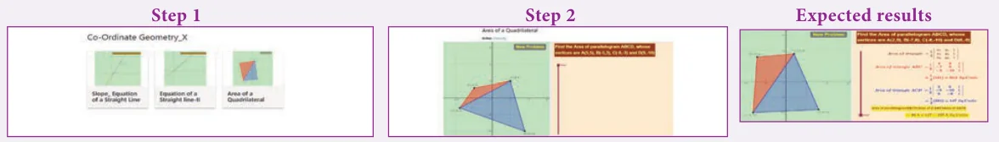
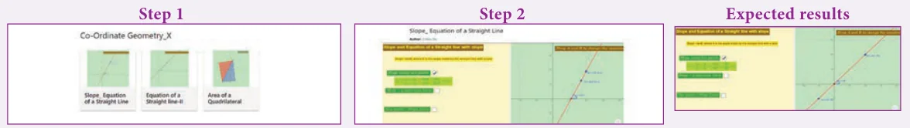

ICT 5.1
Step 1: Open the Browser type the URL Link given below (or) Scan the QR Code. GeoGebra work book named “Co-Ordinate Geometry” will open. In the left side of the work book there are many activity related to mensuration chapter. Select the work sheet “Area of a Quadrilateral”
Step 2: In the given worksheet you can change the Question by clicking on “New Problem”. Move the slider to see the steps. Work out each problem and verify your answer.

ICT 5.2
Step 1: Open the Browser type the URL Link given below (or) Scan the QR Code. GeoGebra work book named “Co-Ordinate Geometry” will open. In the left side of the work book there are many activity related to mensuration chapter. Select the work sheet “Slope_Equation of a Straight Line”
Step 2: In the given worksheet you can change the Line by Dragging the points A and B on graph. Click on the Check boxes on Left Hand Side to see various forms of same straight line.

You can repeat the same steps for other activities
https://www.geogebra.org/m/jfr2zzgy#chapter/356195
or Scan the QR Code.